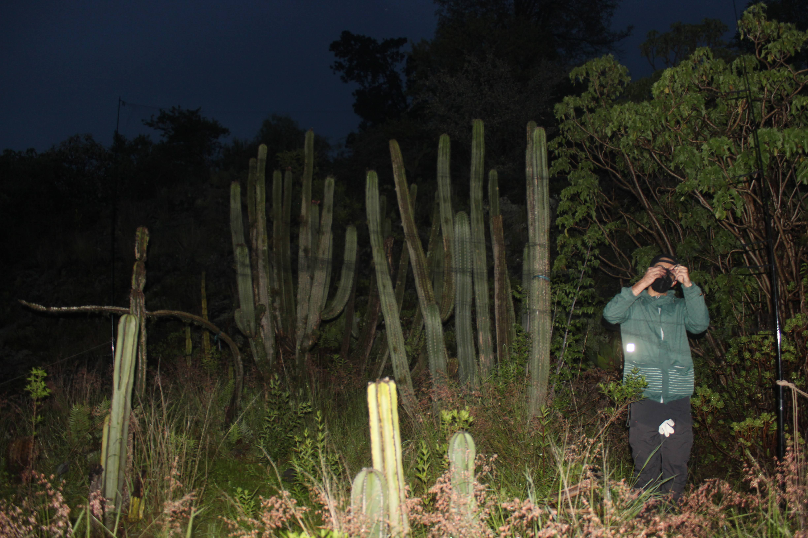
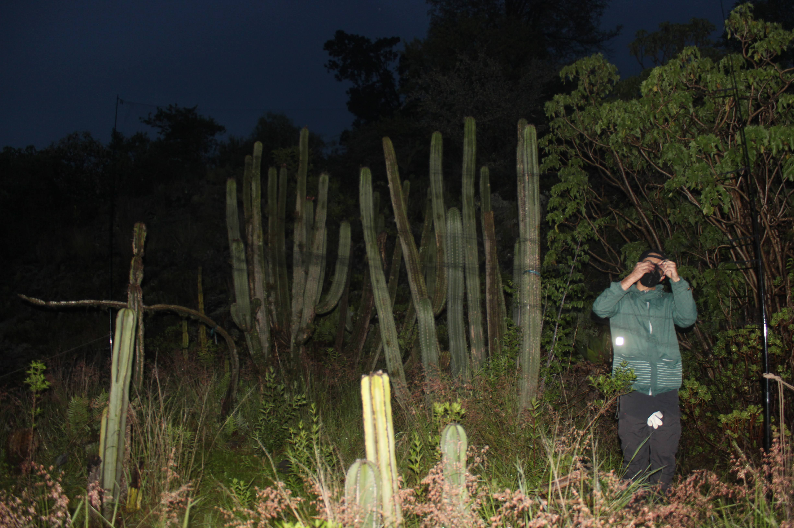
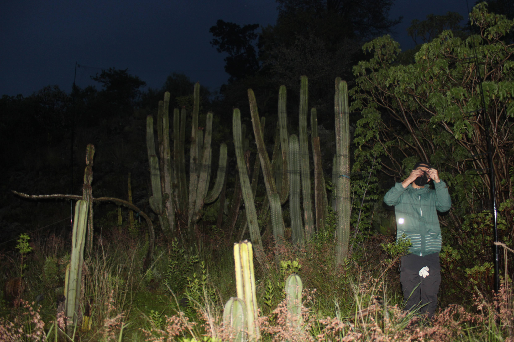

Objetivos: Identificar el uso del hábitat y la dieta de murciélagos nectarívoros en cuatro parques urbanos de
distintas zonas de la Ciudad de México.
Descripción del Proyecto
En respuesta a un vacío de conocimiento sobre murciélagos nectarívoros en la Ciudad de México, más allá de
listados y reportes esporádicos, este proyecto busca brindar información sobre la presencia y dieta de este grupo
de murciélagos a lo largo de un año. Para cumplir este objetivo, se llevaron a cabo muestreos mensuales en cuatro
parques urbanos de la Ciudad de México. El muestreo fue realizado con redes de niebla colocadas frente a plantas
quiropterófilas para capturar a los murciélagos nectarívoros en el sitio. El proyecto también permite obtener
información del momento del año en el que se encuentran presentes las especies migratorias. Tres de las cinco
especies reportadas para este grupo en la Ciudad son migratorias, por lo que es importante identificar en qué
período se encuentran en la región y los recursos alimenticios que están explotando en el área urbana. A cada
murciélago capturado se le colocó un microchip PIT tag, con el objetivo de realizar un seguimiento de cada
individuo en posibles recapturas y detectar posibles movimientos entre parques. Este marcaje también se suma a
otros proyectos tanto de este laboratorio como de colaboradores para identificar movimientos migratorios en
distintas partes de México y Estados Unidos.
Trabajo realizado por nuestros expertos

¿Dónde se hace?
Parques urbanos de la Ciudad de México. Ciudad de México, México.
¿Qué se hace?
Evaluación de la presencia y dieta de murciélagos nectarívoros en cuatro parques urbanos de la Ciudad de México
Participantes
Samara Shames Pérez Harp
Daniela Joselyn Padrón Alemán
Fernando Gual-Suárez
Resultados Esperados
Listado de especies presentes en cada parque.
Comparación del ensamblaje de murciélagos nectarívoros en cada parque.
Permanencia estacional de los individuos capturados a lo largo del año.
Identificación de movimientos entre parques a lo largo del año.
Listado y comparación de la dieta de murciélagos nectarívoros presentes en los parques.
 
